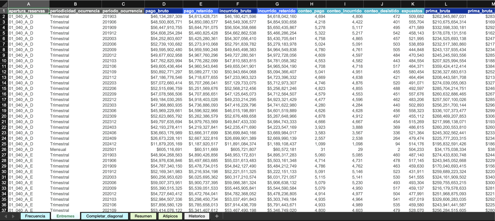
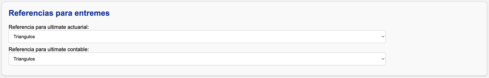
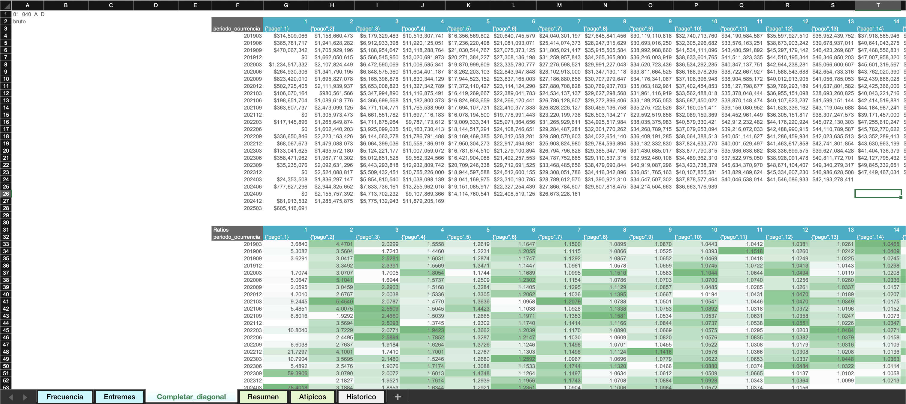

Analizar entremés
La estimación de entremés se basa en la siniestralidad última calculada para el mes inmediatamente anterior al mes de corte definido.
Advertencia
Si no existe una estimación disponible para ese periodo, el sistema generará un error.
Tipos de ocurrencia: anteriores vs. actuales
El análisis distingue entre dos tipos de ocurrencias:
- Ocurrencias anteriores: corresponden a periodos pasados cuya granularidad coincide con la del triángulo (por ejemplo, ocurrencias trimestrales).
- Ocurrencias actuales: corresponden a los meses dentro del periodo en curso, que aún no completan el número de meses de la granularidad completa.
Ejemplo
Para una apertura con trimestral, con corte en 202505:
- Las ocurrencias anteriores incluyen todos los trimestres hasta 202503 (inclusive).
- Las ocurrencias actuales abarcan los meses 202504 y 202505, que forman parte del trimestre en curso.
Estructura de la hoja de Entremés

Las columnas editables están sombreadas en gris.
Información real
Contiene la misma información que la hoja Resumen: pagos, incurridos, conteos, expuestos y primas para todas las aperturas y periodos de ocurrencia.
Ultimates anteriores
Incluye la frecuencia, severidad y siniestralidad última (actuarial y contable) del periodo anterior.
El origen de estas cifras depende de la referencia seleccionada en la sección "Referencias entremés" de la interfaz:

Puede elegirse de manera independiente para el ultimate actuarial y para el contable.
Ejemplo
Si al corte anterior se calcularon triángulos pero el ultimate contabilizado se basó en entremés, se puede tomar de referencia actuarial los triángulos y de referencia contable el entremés.
Metodologías de estimación
Cada ocurrencia puede estimarse con una de las siguientes metodologías. El color indica cómo se visualizan en la hoja.
1. Completar diagonal (violeta)
- Solamente aplica para ocurrencias anteriores.
- Consiste en calcular un factor de completitud que estima cuánto falta para completar la diagonal en cada ocurrencia, usando como referencia triángulos con desarrollo mensual y ocurrencias con la granularidad de la apertura.
- Una vez se completa la diagonal, se aplica la misma velocidad de desarrollo calculada en los triángulos más recientes para la ocurrencia correspondiente.
- Por defecto, se utiliza un promedio ponderado ventana de 4 periodos para calcular el factor de completitud. Puede revisar y ajustar esta estimación desde la hoja "Completar_diagonal".
La hoja "Completar_diagonal"

Funciona igual que las hojas de triángulos, pero llega sólo hasta la sección de estadísticos. Para más información sobre su uso, consulte la guía de uso de triángulos.
Esta hoja incluye una tabla resumen adaptada. En ella encontrará:
- Factores de completitud por ocurrencia para pago e incurrido.
- Porcentajes de desarrollo por ocurrencia para pago e incurrido, útiles para validar contra expectativas de negocio.

Una vez guardados los resultados, se actualizarán automáticamente los factores y porcentajes en la hoja Entremés.
2: Bornhuetter-Ferguson (naranja)
- Solamente aplica para ocurrencias anteriores.
- Pondera los resultados de las metodologías 1 (completar diagonal) y 3 (porcentaje de siniestralidad) según el porcentaje de desarrollo de la ocurrencia. A menor desarrollo, mayor peso se asigna a la metodología 3.
3: Porcentaje de siniestralidad (rojo)
- Aplica tanto para ocurrencias anteriores y actuales.
- Consiste en asignar directamente un porcentaje de siniestralidad para cada ocurrencia.
- Es la metodología por defecto para la ocurrencia del último mes.
4: Prima pura de riesgo (aguamarina)
- Aplica tanto para ocurrencias anteriores y actuales.
- Estima la siniestralidad multiplicando una prima pura fija por el número de expuestos.
5: Mantener
- Conserva la siniestralidad última del periodo anterior.
- Es la metodología por defecto para todas las ocurrencias que no sean el último mes.
Frecuencia y Severidad
- Frecuencia última: por defecto se mantiene igual a la estimada en los triángulos más recientes.
- Severidad última se calcula por despeje (siniestralidad / conteo ultimate).
Ambos valores pueden modificarse manualmente.
Gradualidad
Una vez estimada la siniestralidad última:
- El sistema calcula el ajuste respecto al periodo anterior.
- Para el ultimate contable, el usuario puede decidir aplicar sólo un porcentaje de ese ajuste. Esto se configura en las últimas columnas de la hoja.
Otras columnas
- Comentarios: espacio para documentar los criterios, supuestos y justificaciones aplicados a cada ocurrencia.
- Alertas (columnas amarillas): se activan cuando la metodología 1 (completar diagonal) difiere en más del 5% respecto al ultimate del periodo anterior. Estas alertas tienen fines de revisión y validación.
Pasos finales
Los ultimates de la hoja Resumen están vinculados a los de la hoja Entremés. Puede guardar las fórmulas y criterios utilizados en el entremés para conservarlos en caso de que la información real se actualice.
- Para guardar los parámetros actuales, presione Guardar fórmulas entremés.
- Para recuperar dichos parámetros posteriormente, presione Traer fórmulas entremés.
Análisis adicionales
Si desea realizar cálculos adicionales:
- Copie la información desde la hoja Resumen o desde el archivo
output/resultados.xlsxa un nuevo archivo independiente. - Guarde el nuevo archivo en la carpeta
plantillas.
Info
Este archivo no será afectado por los procesos de la aplicación, por lo que puede modificarlo libremente sin riesgo de sobrescritura.